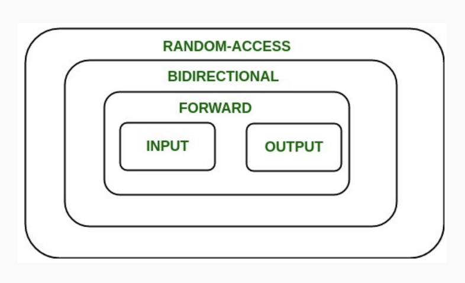
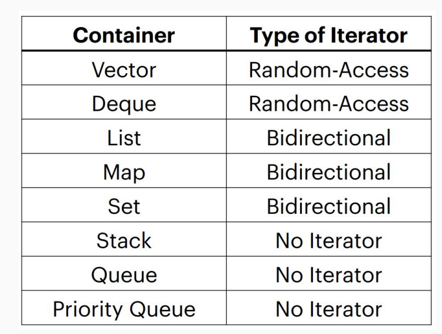

C++
命名空间
相当于导入某个模块 例如：
就可以直接使用 cout 而不需要 std::cout
std 是标准模板库（STL）的命名空间
也可以指定某个函数或变量，如：
后续就可直接使用 cout.
变量和常量
c++ 是静态类型语言
基本类型
增加了字符串类型
结构体
与 C语言中的类似
pair
c++ 中的特殊结构体，位于 std 命名空间中 pair 是一个模板，在声明时要指定两个成员的类型 使用时用 first 和 second 访问两个域
std::pair<int, std::string> p1(1, "hello");
cout << p1.first << " " << p1.second;
// prints "1 hello"
- 使用 std::make_pair 快速创建 pair 对象
- 可用于打包返回值
- 无需声明类型
auto
auto 关键字，用于编译时自动推导类型，可以省去写复杂类型声明的麻烦 常用于
- 函数返回值类型
- 接受 make_pair 返回的 pair 对象
- 循环变量
有点像 python 了 但不要过度使用，仅在类型名过长的时候使用
结构化绑定
使用方括号 []
例：
auto p = std::make_pair(“s”, 5);
auto [a, b] = p;
// a is string, b is int
// auto [a, b] = std::make_pair(...);
就是解包，也适用于结构体，很像 python，但不能嵌套
用于循环：
void shift(vector<std::pair<int, int>>& nums) {
for (auto& [num1, num2]: nums) {
num1++;
num2++;
}
}
直接迭代序列中的元素，很像 python 的 for item in seq
且上例中的变量都是引用（ python 貌似做不到 ）
变量初始化
- 统一初始化：使用花括号
{} - 结构体：
Student s = {"Sarah", "CA", 21}; - 向量：
std::vector<int> v{1, 2, 3}; - 基本类型：
int x{5}; - 注意区分初始化的花括号和 make_pair 的圆括号
- std::initializer_list
std::vector<int> vec(3, 5); // 3 个 5
左值和右值
- 左值：可以出现在 = 左或右
-
右值：只能出现在 = 右
-
l-values 有名称，不是临时的
- r-values 没有名称，是临时的，如常量
引用
!!! 特别注意！谨慎使用对函数内局部变量的引用！超出生命域可能导致段错误！
使用 & 符号，相当于对变量取别名，常用于函数传参，相当于直接自动指针了。例：
&参与构建了一种新的变量类型，将当前变量与被引用变量绑定，可以对任何类型使用，用法类似创建指针时的*- 你不能（非 const）引用一个右值, only create references to variables
- 同样的，不能创建对常量的变量引用
auto&会根据值自动确定是否 const，但也可手动指定const auto&- 函数也可以返回引用变量，甚至可以是左值
常见错误
void shift(vector<std::pair<int, int>>& nums) { // 函数声明中是引用
for (size_t i = 0; i < nums.size(); ++i) {
auto [num1, num2] = nums[i]; // 但解包出来的变量不是引用
num1++;
num2++;
}
}
- "=" 仅产生值传递，只有加上
&才是引用 - 使用 auto& 避免
引用的使用场景
- 当要直接修改传入的变量时
- 当要使用的对象很大时，使用引用可以避免拷贝
- 当要给变量起别名时
常量与常量引用
常量规定了一个值不能被修改的变量
常量也可以是引用，但：
- 若引用变量，则不能通过引用修改，相当于一个观察者
- 若引用常量，则都不能修改
- 常量引用可以通过
&引用右值
流
How can we convert between string-represented data and the real thing?
流的分类
流是对输入输出的抽象，在数据和字符串之间相互转化
以方向分类
- 输入流：读取数据
- 输出流：写入数据
- 输入输出流：可读可写
以数据源或目的分类
- console streams: 从控制台读写
- file streams: 从文件读写
- string streams: 从字符串读、向字符串写
流操作符
>>: extraction operator<<: insertion operator
Output Streams
- 类型：
std::ostream - 用
<<操作符向流中输送转化成字符串后的数据 - 如：
std::cout，是<iostream>中的一个全局常量
Output File Streams
- 类型：
std::ofstream - 用
<<操作符向文件流中输送转化成字符串后的数据 - 必须手动创建文件流对象，如：
std::ofstream out("file.txt"); - ofstream 采用先清空再写入的策略，相当于 shell 重定向运算符
>
Input Streams
- 类型：
std::istream - 用
>>操作符从流中接受字符串，并转化为数据 - 如：
std::cin，是<iostream>中的一个全局常量
Nitty Gritty（基本事实）Details of std::cin:
- 第一个
cin会等待用户输入 - 每个
>>读到空白字符为止（tab, space, newline） - 第一个空白字符之后的字符储存到 buffer，用于下一次
>> - 如果 buffer 空了，则再次等待用户输入
- whitespace 被吃掉了
istream 的异常处理
当无法读取到期望的数据时，程序不会挂掉，而是读入一个默认异常值，如 int 的 0，str 的空字符串
而后，输入流的 fail 位被设为 1，因此不能再接受输入
std::getline()
函数声明：
is是输入流，如std::cinstr是要储入的字符串delim是分隔符，默认是换行符
How it works:
- 清空 str 中的内容
- 提取 is 中的内容，直到：
- EOF，并设高 EOF 位（
is.eof()） - 碰到 delim（不包括 delim 本身）
- str 没有空间了，并设高 fail 位（
is.fail()） - 如果出于某种原因没读到任何字符，则 fail
不要混用 >> 和 getline !
因为 >> 会保留空白字符，而 getline 会越过 delimiter
Input File Streams
- 类型：
std::ifstream - 用
>>操作符从文件流中接受字符串，并转化为数据 - 必须手动创建文件流对象，如：
std::ifstream in("file.txt"); - 文件流 ifstream 和 ofstream 位于
<fstream>中
String Streams
作用：把字符串当作流来处理
字符串流位于 <sstream> 中
有
std::istringstream：只读std::ostringstream：只写std::stringstream：可读可写
三类
- 其中的读写是指字符串流的读和写的动作
- 用圆括号初始化字符串流，如：
函数
函数重载
函数名相同，参数不同（参数类型不同或参数个数不同），增加了函数名使用的方便性 例：
int half(int x, int divisor = 2) { // (1)
return x / divisor;
}
double half(double x) { // (2)
return x / 2;
}
half(4)// uses version (1), returns 2
half(3, 3)// uses version (1), returns 1
half(3.0) // uses version (2), returns 1.5
同时，c++ 引入了函数默认参数
容器
容器是一种用于组织数据的数据结构类型
vector, deque, list, map, set 等都是容器
std::vector
动态数组
基本操作
v.size()返回大小v.push_back(x)在末尾添加元素v[i] = k访问元素v.empty()判断是否为空v.clear()清空
迭代器
迭代器是一种用于遍历容器中元素的对象，有头有尾，可以前后移动，可以比较，跟指针简直一毛一样
其实迭代器是“广义”指针，C 语言中的指针只是迭代器的一种
stl 中的所有容器都支持迭代器，但并不完全相同
一些共同属性：
- Initializing:
iter = s.begin() - Incrementing:
++iter - Dereferencing:
*iter - Comparing:
iter != s.end() - Copying:
new_iter = iter
迭代器层次关系图：

input只能读取值，output在此基础上还能写入值bidirectional可以向前向后移动- “随机”访问意味着访问任何位置的元素所需的时间都是一样的，类似索引
- 指针就是 Random-access 类迭代器
- stl 容器至少支持 forward 迭代器
stl 迭代器：
